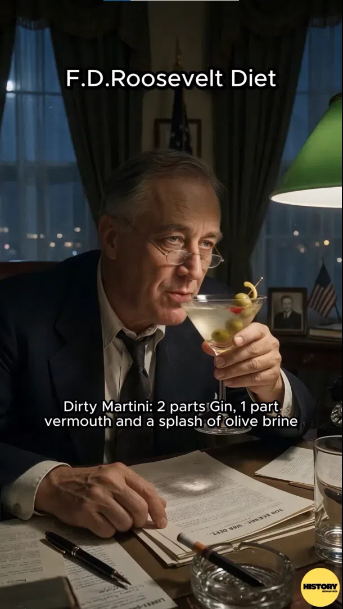

Franklin Delano Roosevelt lived through a time of extreme contrast. While he came from a wealthy New York family, he spent his presidency leading a nation that was literally starving during the Great Depression. This tension showed up every single day on his dinner plate. His meals were a constant tug of war between his sophisticated palate and the strict, frugal kitchen managed by Eleanor Roosevelt and the infamous housekeeper Henrietta Nesbitt.
If you watched our latest reel, you saw the highlights of what FDR consumed during his high stakes meetings and quiet evenings. Here is the deeper story behind those choices.
Roosevelt was a social creature who loved his cocktail hour. His Dirty Martini was legendary among the Washington elite, but not necessarily for being good. He used two parts gin, one part vermouth, and a heavy splash of olive brine. He famously shook his martinis until they were ice cold and cloudy. In those days, a proper gentleman stirred a martini to keep it crystal clear. By shaking his, FDR was subtly breaking tradition, much like he did with his politics.
Every Sunday evening, the White House staff was given the night off. Eleanor Roosevelt would pull out a silver chafing dish and cook scrambled eggs right at the table for the President and their guests. This was more than just a meal. It was a calculated image of domestic simplicity. It told the American people that even the leader of the free world was participating in the sacrifices of the era by eating a simple, low cost dinner.
When the kitchen wanted to save money, they turned to rice and vegetables. Green peppers stuffed with rice and a tiny bit of ground meat appeared frequently. While FDR was polite about it, he often complained privately that the White House food was becoming bland and repetitive under the new budget rules.
This was one of FDR's true loves. Terrapin soup was made from diamondback terrapins and was a sign of old world status. It was rich, often flavored with sherry, and served as a reminder of Roosevelt’s aristocratic roots in Hyde Park. Even during the Depression, this was one indulgence he refused to give up entirely.
When the President managed to host a private stag dinner without the watchful eyes of the budget keepers, he ordered steak. He liked his beef thick and topped with a massive amount of melting butter. It was the ultimate comfort food for a man carrying the weight of a world war on his shoulders.
Beyond the camera lens, there were several other foods that defined the Roosevelt years. These items tell us even more about the man behind the desk.
In 1939, King George VI and Queen Elizabeth visited the United States. It was the first time a British monarch had ever set foot on American soil. Instead of a fancy French banquet, FDR served them hot dogs and beer at a picnic. It was a massive scandal at the time. However, the King reportedly loved them and even asked for seconds. This "Hot Dog Diplomacy" helped solidify the bond between the two nations before World War II began.
Roosevelt had a simple soft spot for grilled cheese. Unfortunately, his housekeeper was so focused on health and economy that she often served them on cold toast with unmelted cheese. FDR once remarked that he would give anything for a sandwich that was actually hot and gooey.
Being an outdoorsman, FDR had a taste for wild game. He frequently received gifts of wild duck or venison from friends across the country. These were often served during late night strategy sessions where he would plot out the details of the New Deal while gnawing on a piece of roasted duck.